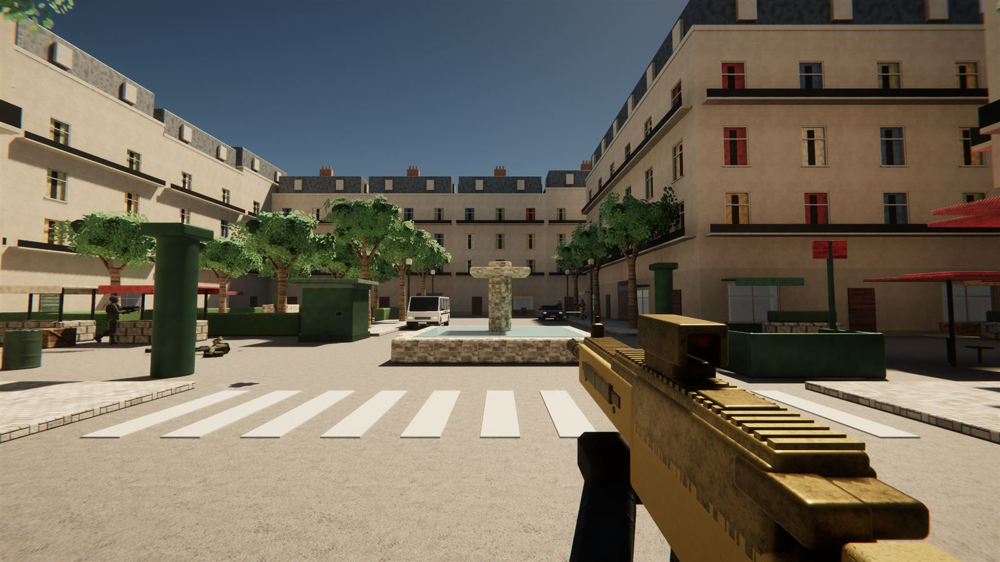
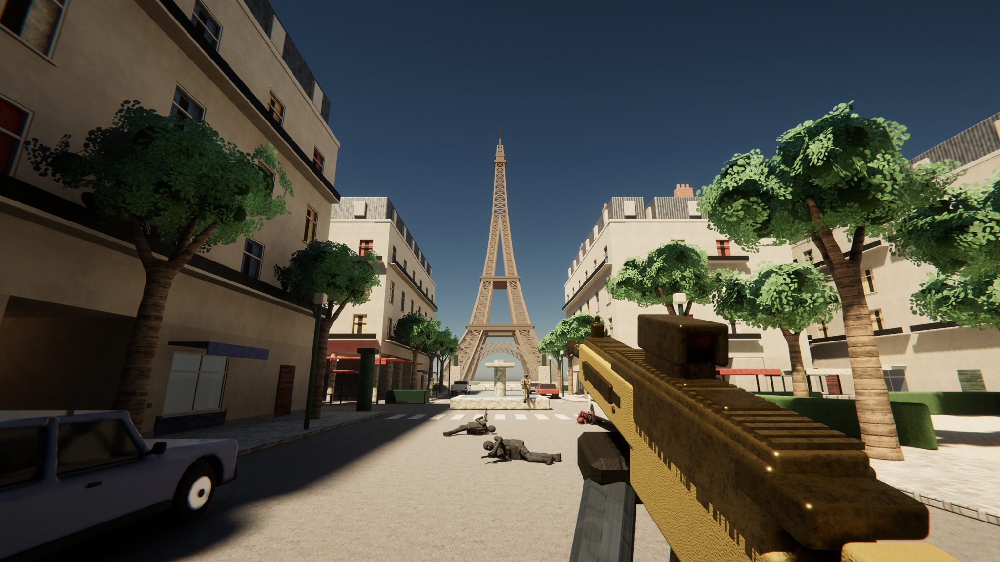
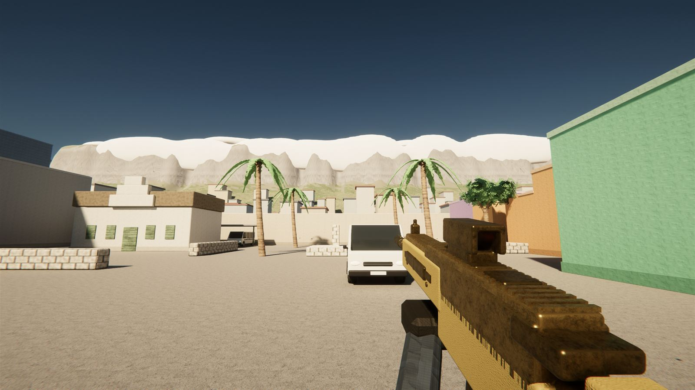
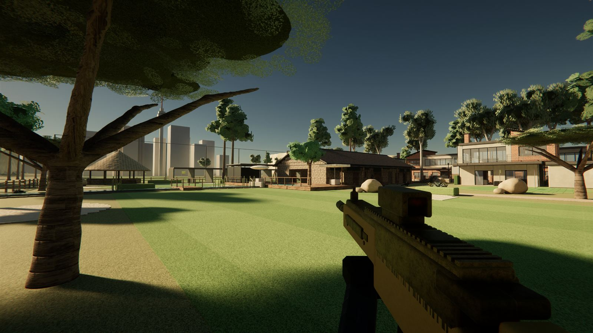
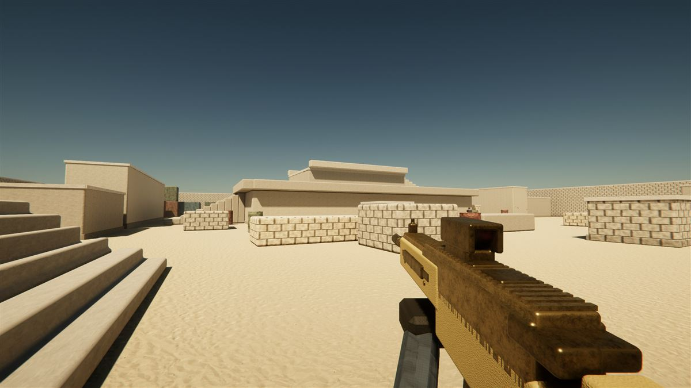
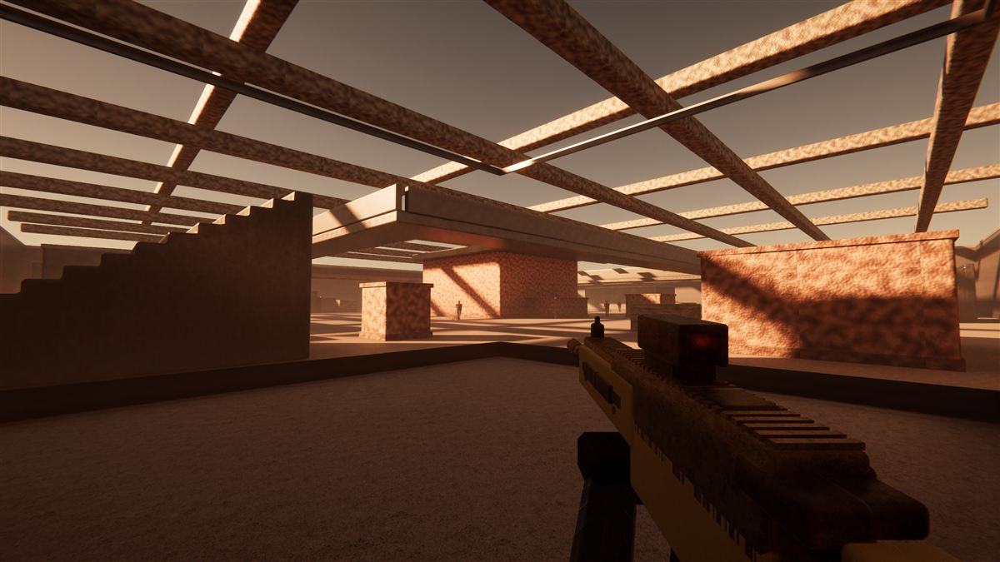
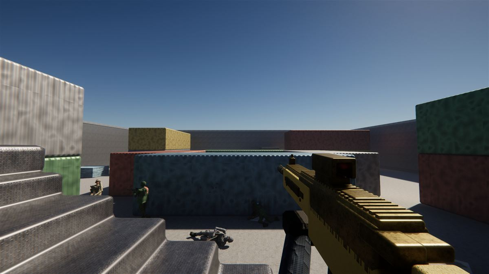
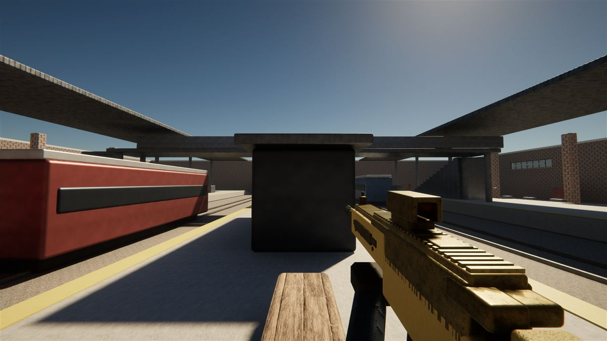
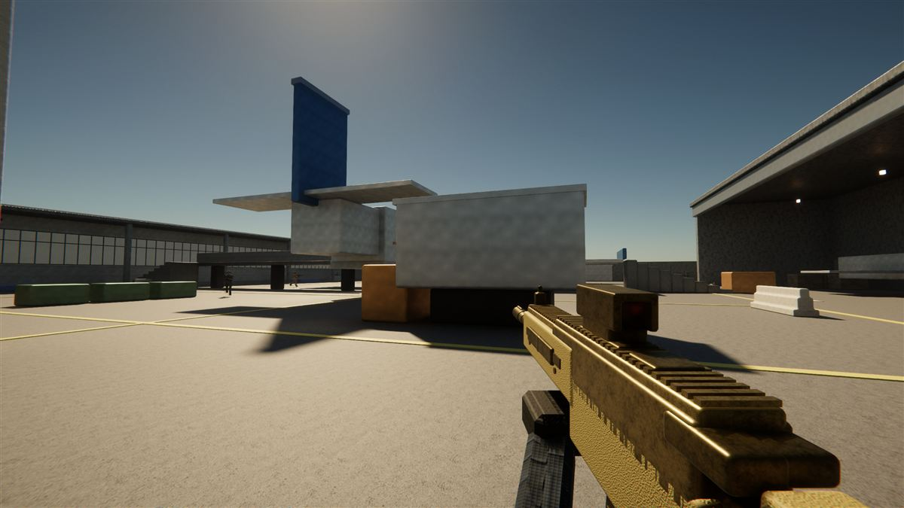
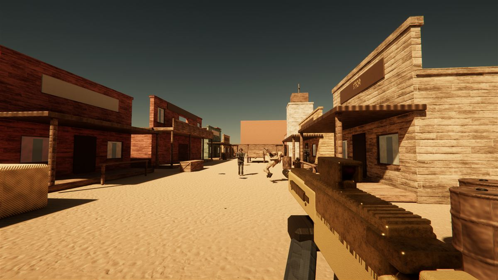

Paris
48.858° N 2.294° EA boulevard of pale stone and zinc roofs running down to the Seine, the Eiffel Tower over the far bank. A cafe under arcades, a courtyard, a covered passage and a small park fill the four corners.

A fast first-person shooter with ray-traced light. Fight down a Paris boulevard under the Eiffel Tower, through Cape Town's Bo-Kaap, across a desert compound and a flooded steel mill, against bots that play the objective.
Real places and invented ones, each built for one fight. Every map plays all five modes.

A boulevard of pale stone and zinc roofs running down to the Seine, the Eiffel Tower over the far bank. A cafe under arcades, a courtyard, a covered passage and a small park fill the four corners.

Table Mountain over the city bowl. Bo-Kaap's painted houses fill the west, Strand Street runs down the middle, and the Waterfront's containers and clock tower line the harbour.

A golf estate on the Highveld. The 18th crosses a stream to a green ringed with bunkers, the clubhouse fills old stone stables beside the driving range, and brick-and-plaster houses and a building site line the east under tall gums and pines.

A walled desert research station. Long sightlines down the north wall, a two-storey core with ramps to the roof, and tight container alleys on the flanks.

A flooded steel mill at dusk. Catwalks ring the furnace hall, pipes break every sightline, and the centre pit is a killbox nobody survives twice.

Twenty seconds between spawns. A freight yard the size of a tennis court, stacked four containers deep. Bring something automatic.

A commuter terminal frozen mid-rush hour. Two trains block the tracks, the footbridge owns the middle, and every platform is a long, bright, honest firing lane.

A grounded airliner splits the apron. Fight under its belly, over its wings and along the jet bridge, between a terminal at one end and a hangar at the other.

High noon on one wide street. Boardwalks and false fronts line the road, the saloon roof looks down it, and the back lots hide a stable, a boneyard and a played-out mine.
The full issue, with the numbers the game uses. Damage is per round at close range; shotguns list pellets × damage.
| Weapon | Class | Dmg | RPM | Mag | Unlock |
|---|---|---|---|---|---|
| CR-4 CarbineDependable 5.56 carbine. Flat recoil, kills in four to the chest at any range you can see. | Assault Rifle | 26 | 760 | 30 | Start |
| VLK-74Heavy 7.62. Three-shot kill up close, but the muzzle climbs hard after the second round. | Assault Rifle | 34 | 580 | 30 | Start |
| Kestrel A3Bullpup 5.56 with a built-in steadiness. Less punch than the CR-4, far less bounce. | Assault Rifle | 27 | 720 | 30 | Level 3 |
| Raptor-HFull-auto 7.62. Three to the chest at any range, if you can tame the climb. | Assault Rifle | 36 | 620 | 20 | Level 20 |
| K36 CompactCompact polymer carbine. Barely moves when you hold the trigger down. | Assault Rifle | 25 | 780 | 30 | Level 22 |
| R16 RifleFull-length rifle, one shot a pull. Three hits at ranges where carbines need five. | Assault Rifle | 40 | 400 | 30 | Level 24 |
| KR-12The modern battle carbine: the VLK-74's punch with half its kick. | Assault Rifle | 32 | 680 | 30 | Level 29 |
| Ranger EBRA marksman's battle rifle. Two hits anywhere, at almost any range. | Battle Rifle | 54 | 420 | 20 | Level 31 |
| Mirage 35Old battle-rifle bones with a thirty-five round magazine. Hits hard and keeps going. | Assault Rifle | 30 | 700 | 35 | Level 32 |
| Paladin 416The CR-4 done properly: faster, flatter, and it never jams. | Assault Rifle | 28 | 830 | 30 | Level 40 |
| Ratel SBRRifle damage in a gun the size of an SMG. Built for the last ten metres. | Assault Rifle | 31 | 780 | 30 | Level 42 |
| Falchion Battle Rifle7.62 in a semi-auto frame. Two to the chest at nearly any range, if you can hold it down. | Battle Rifle | 48 | 380 | 20 | Reward tier 11 |
| CQ-18 CarbineShort-barrel carbine for rooms and corridors. Faster than the CR-4, gives up range for it. | Assault Rifle | 24 | 860 | 30 | Reward tier 30 |
| Wasp PDWFastest handling weapon in the crate. Shreds inside twenty metres, useless past forty. | Submachine Gun | 20 | 980 | 36 | Start |
| Pulse 90Fifty rounds in a top-loaded mag. Keep the trigger down and the corner is yours. | Submachine Gun | 18 | 900 | 50 | Level 9 |
| MK5 SMGThe classic. Slower than the Wasp but it goes exactly where you point it. | Submachine Gun | 22 | 860 | 30 | Level 25 |
| Bison 64Sixty-four rounds in a tube under the barrel. You run out of targets first. | Submachine Gun | 19 | 750 | 64 | Level 28 |
| KV-9 VortexRecoil that goes down instead of up. The fastest room-clearer on the pass. | Submachine Gun | 19 | 1100 | 30 | Reward tier 15 |
| Brawler .45.45 ACP in a polymer frame. Slower than the Wasp, but three hits drop anyone close. | Submachine Gun | 31 | 650 | 25 | Reward tier 35 |
| Breacher 12Ten pellets of pump-action argument. One shot inside nine metres, confetti past twenty. | Shotgun | 10×13 | 78 | 6 | Start |
| Tempest 12Semi-automatic: no pump between shots. Two blasts before a pump gun has racked once. | Shotgun | 8×14 | 190 | 8 | Level 6 |
| Thunder 12A fully automatic shotgun. Hold the trigger and clear the room. | Shotgun | 8×10 | 300 | 8 | Level 27 |
| Steppe 12Magazine-fed semi-auto. Shoots as fast as you can pull, reloads in one move. | Shotgun | 8×12 | 260 | 8 | Level 30 |
| Bulwark LMGA hundred rounds of suppression. Set up on an angle and make the lane unusable. | Light Machine Gun | 24 | 700 | 100 | Start |
| Kodiak LMGLong-barrelled 5.45 on a wooden frame. Hits harder than the Bulwark and handles faster. | Light Machine Gun | 30 | 600 | 75 | Level 12 |
| Buzzsaw MGTwelve hundred rounds a minute. Loud, heavy and very hard to stand in front of. | Light Machine Gun | 25 | 1150 | 100 | Level 33 |
| Taiga MGA belt of full-power rifle rounds. Slow to bring up, slow to reload, nothing survives it. | Light Machine Gun | 33 | 640 | 100 | Level 36 |
| Longbow DMRBolt-action .338. Any hit above the waist is a kill. Hip-firing it is a prayer, not a plan. | Sniper Rifle | 101 | 52 | 5 | Start |
| Goliath .50 CalSemi-automatic .50 BMG. A hit anywhere drops them, and you do not have to work the bolt. | Sniper Rifle | 160 | 72 | 10 | Level 16 |
| Arbiter .338Magnum bolt action. One shot to the body ends it at any distance. | Sniper Rifle | 135 | 44 | 5 | Level 35 |
| Heritage 98Old wood and a quick bolt. The lightest sniper here, up on target before they see you. | Sniper Rifle | 118 | 58 | 5 | Level 38 |
| SV-10 MarksmanTen rounds, no bolt. Two to the chest, one to the head, and it never stops the fight to cycle. | Sniper Rifle | 78 | 120 | 10 | Reward tier 19 |
| P18 SidearmStandard issue 9mm. Faster to draw than to reload a dry primary. | Pistol | 28 | 430 | 15 | Start |
| .44 MagnumTwo body shots, one headshot. Punishes anyone who thought a sidearm was a joke. | Revolver | 60 | 160 | 6 | Start |
| Machine PistolEmpties in a second and a quarter. Closet-range panic button. | Machine Pistol | 16 | 1150 | 24 | Start |
| .357 MambaStainless and precise. A touch less than the .44, a touch quicker on the follow-up. | Revolver | 55 | 190 | 6 | Level 14 |
| FS-57Twenty rounds of small, fast bullets. The sidearm that keeps fighting. | Pistol | 25 | 480 | 20 | Level 23 |
| Spitfire 9A cheap, loud bullet hose. Empty the magazine first, aim later. | Machine Pistol | 17 | 900 | 20 | Level 26 |
| .357 IronhornFires from the bottom chamber, so it kicks back, not up. Two shots, calmly. | Revolver | 66 | 170 | 6 | Level 34 |
| D50 Hand CannonA .50 that has no business being a sidearm. Seven chances; make them count. | Pistol | 52 | 220 | 7 | Reward tier 13 |
| Micro StingerA sidearm that thinks it is an SMG. Thirty-two rounds gone before the casing lands. | Machine Pistol | 15 | 1200 | 32 | Reward tier 23 |
Everything you earn stays earned. Progress saves between sessions.
Every kill counts toward your career level and rank badge. Each weapon has 20 levels of its own that unlock optics, muzzles, grips, magazines, stocks and ammunition in the Gunsmith.
Gold at 100 kills, Platinum at 40 headshots, Diamond after 8 lives of five kills or more. Nebula once every gun in a class has Diamond and Gold.
50 tiers of finishes, operators, weapons and perks such as Scavenger, Steady Aim and Field Medic, earned by playing. No purchase involved.
Three kills in one life for a recon ping, five to resupply, seven for a full sweep, twenty for the tactical nuke. Damage an enemy someone else finishes and the assist is yours.
RECON-1 · VANGUARD · WRAITH · SABLE · TUNDRA · ASHER · REVENANT · MARSHAL · GHOST · WARDEN · SPECTER · NOMAD · TITAN · VIPER · INFERNO.
Three daily and four weekly challenges, new every day and every week, for extra XP.
Free, for Windows. No account, no store, no ads.
Version 1.0 · Windows 10 / 11, 64-bit
Built in Unity's high-definition renderer, with ray-traced light, shadows and reflections.
Operator face: “Infinite, 3D Head Scan” by Lee Perry-Smith (Infinite Realities, ir-ltd.net), based on a work at triplegangers.com, licensed under Creative Commons Attribution 3.0. Converted, scaled, cut below the chin, eyes painted open.
Surface textures from ambientCG, released under CC0.
Made with Unity. NVIDIA and DLSS are trademarks of NVIDIA Corporation.
Every weapon in the game is fictional. Names and statistics are invented, and any likeness to a real firearm is in general shape only.